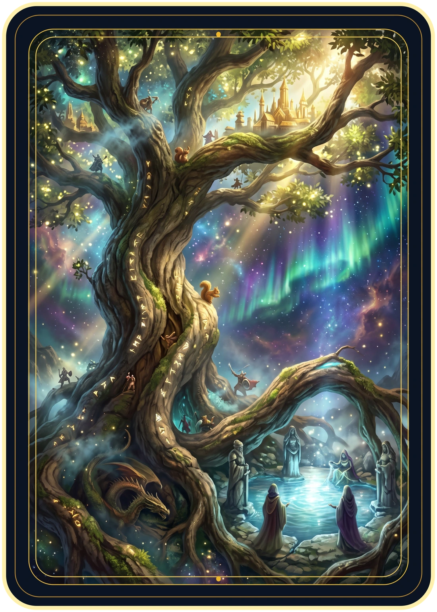
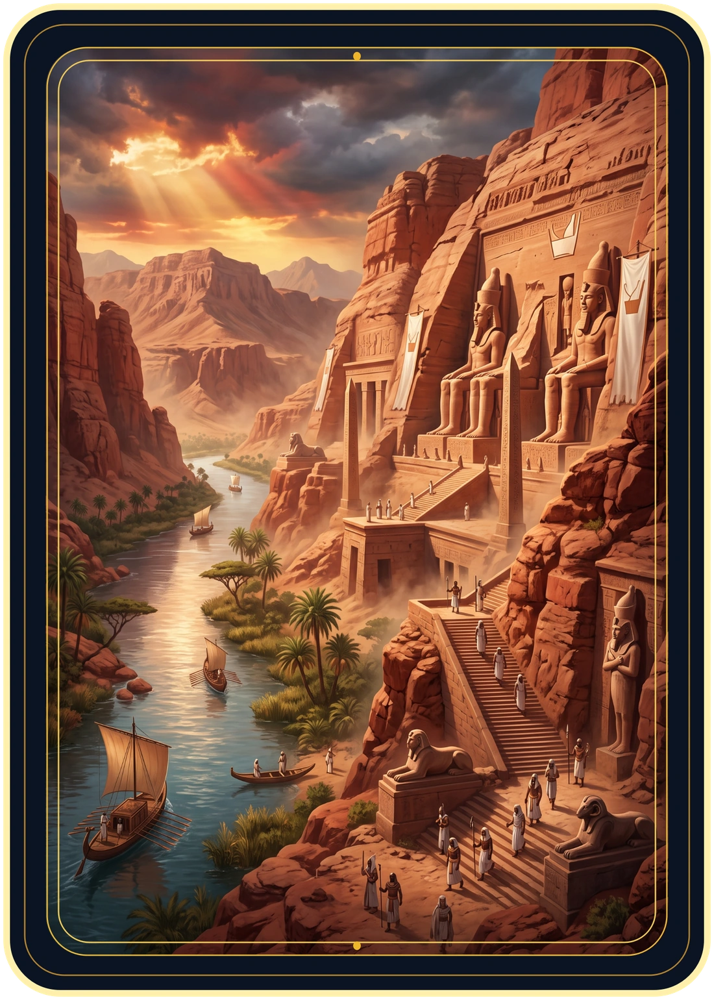
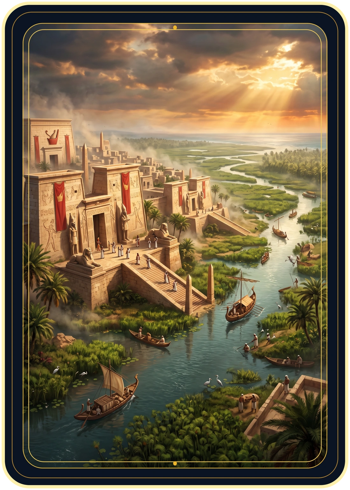
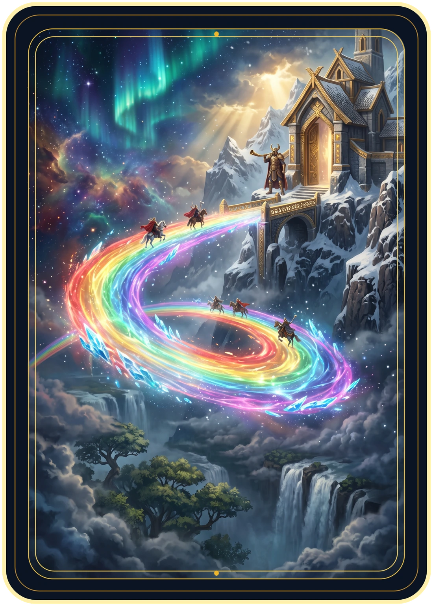
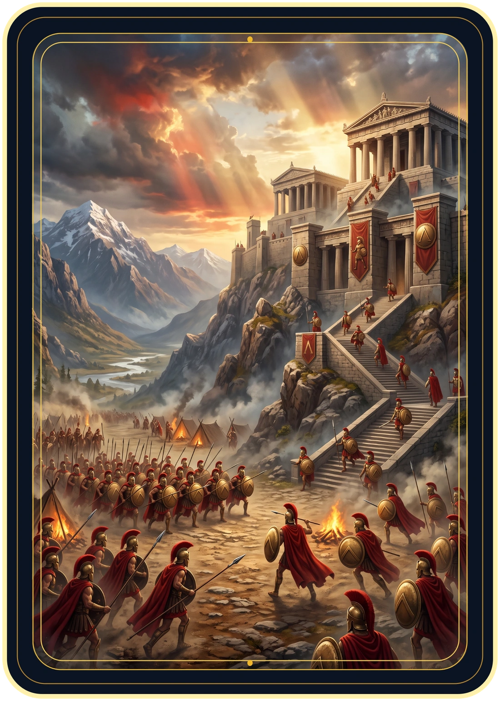
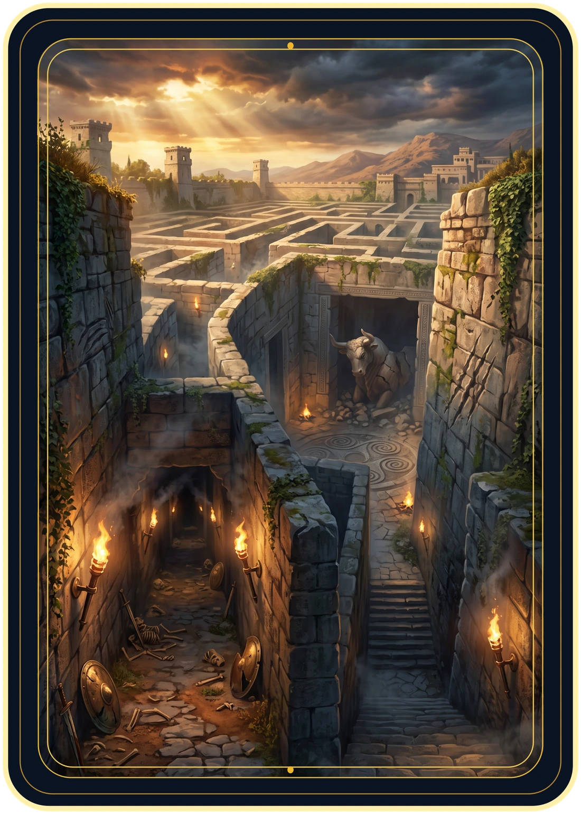
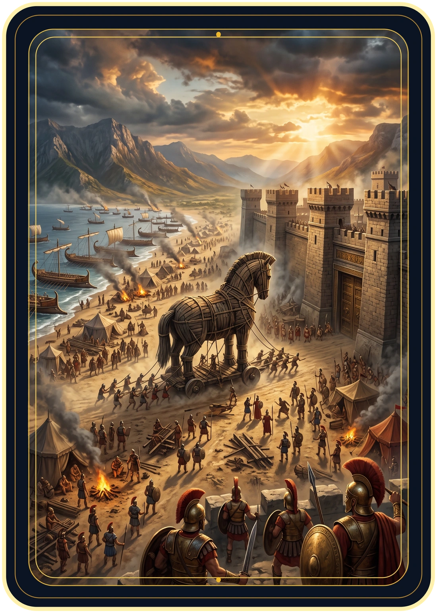
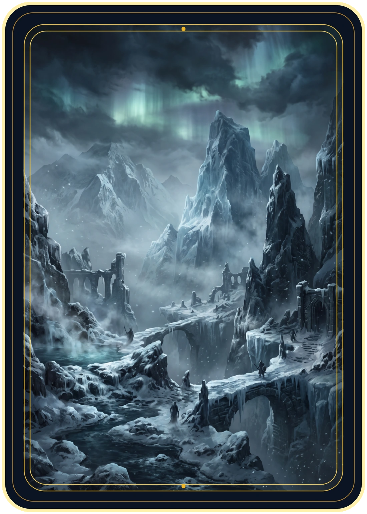

Yggdrasil
Fortalece Odin em +2 de poder.
O terreno ativo beneficia os dois jogadores. Um terreno por rodada. Abrir o jogo

Fortalece Odin em +2 de poder.

Fortalece todos os egípcios em +2 de poder.

Fortalece todos os egípcios em +2 de poder.

Fortalece todos os nórdicos, exceto Loki, em +2 de poder.

Fortalece os espartanos em +2 de poder e Ares em +3 de poder.

Fortalece o Minotauro e os monstros gregos em +2 de poder.

Fortalece Aquiles, Athena e Ares em +3 de poder.

Fortalece Loki e os gigantes de gelo em +2 de poder.